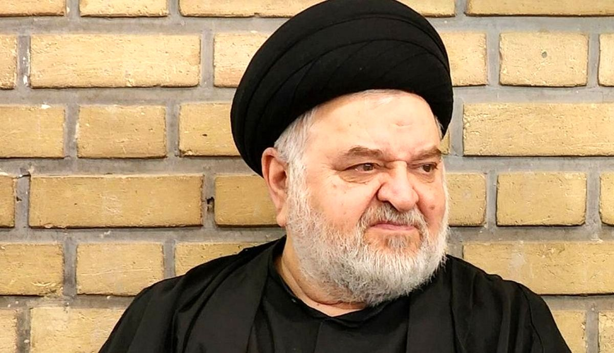

توضیح داماد آیتالله سیستانی درباره اراذل خواندن معترضان ایران
پایگاه خبری تحلیلی نامه نیوز (namehnews.com) : در پی انتساب برخی مطالب، دفتر حجت الاسلام و المسلمین سید جواد شهرستانی اعلام کرد، همگان میدانند سیاق ایشان مداخله در امور سیاسی نیست و در حوادث مهم دیگری که طی سنوات مختلف روی داده است همواره بدون هرگونه سوگیری سیاسی و حزبی، جانب اعتدال و اخلاق و حقوق مردم و حریم دین و مذهب را داشته و همه طیفها را دعوت به گفتگو کرده اند. این سیرهی چهل ساله ایشان است و مربوط به امروز و دیروز نیست.